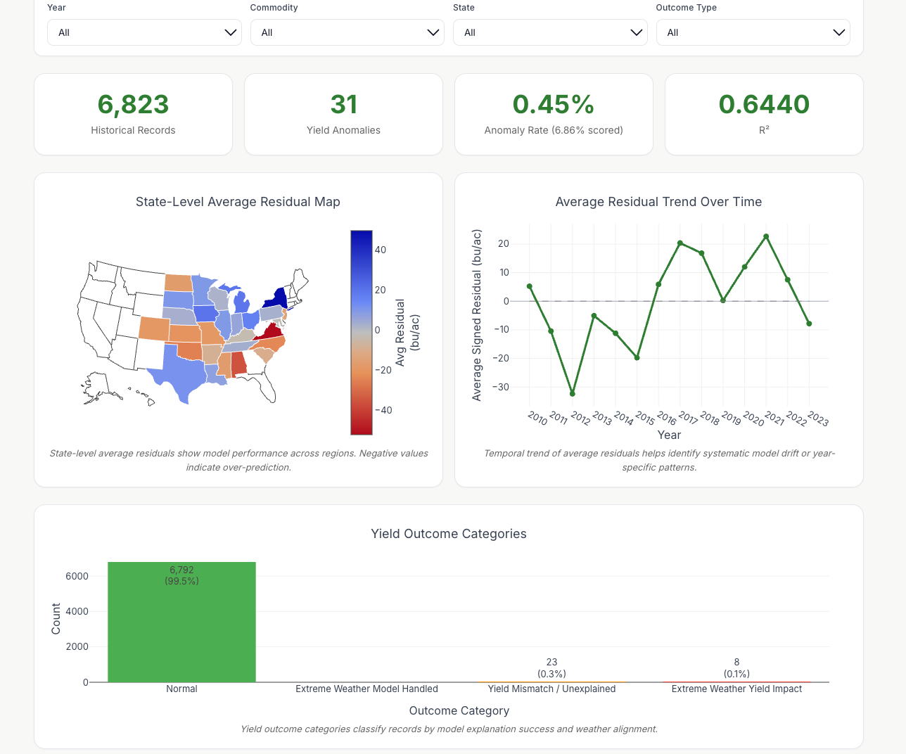

1st place · Databricks × UW Hackathon2026 · Team project
TerraCast
When crop yields depart from weather expectations.
We combined county-level corn and soybean yields with weather data to predict yields and flag unusual outcomes. The dashboard lets users explore predictions, regional patterns, and model explanations.
My work: collaborated on weather feature engineering, predictive modeling, and anomaly analysis. Presented our approach at the Data + AI Summit 2026.
0.6440 R²County-based 5-fold CV
LightGBM + Random Forest ensemble
LightGBM + Random Forest ensemble
Databricks · Python · LightGBM · MLflow · SHAP
